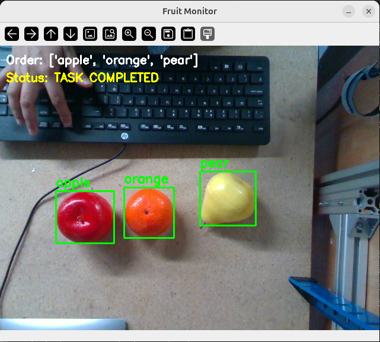

High-level task planning implemented using Gemma-3-12B as a layer above the fine-tuned π0.5 policy. The planner determines which of the six manipulation primitives are required to transform the current block configuration into a specified goal configuration, expressing each as a natural-language instruction passed to the policy for execution.
The initial planner used rendered workspace and goal images as its input, but evaluation showed that modifying the images did not consistently change the planner's output — evidence that the model was not reliably grounding its decisions in the visual observations for this task. To isolate planning from this perception limitation, the final planner uses the ground-truth symbolic block state provided by the simulator instead: each block is represented as being on either the near or far side of the workspace divider. The planning and execution structure is unchanged; only the state representation given to the planner was replaced.
The planner considers each block independently rather than asking the VLM to reason about all three blocks in a single structured response — motivated by an earlier monitoring pilot in which Gemma-3-12B produced accurate free-form scene descriptions but less reliable structured outputs when required to associate colours and positions with multiple similar objects simultaneously. For each block colour, the planner receives its current and goal symbolic state and returns whether the block must move; if the current and goal positions differ, the corresponding primitive (“move the {colour} block to the {goal} side”) is added to the task list. After each executed primitive, the current configuration is checked against the goal; if not yet reached, the planner generates an updated sequence from the new state. This plan–execute–check cycle repeats for a maximum of three planning rounds, giving the system a practical bound on execution time while allowing it to recover from an unsuccessful manipulation or a change introduced by a human.
| Planner model | Gemma-3-12B |
| Input | Current-scene RGB + goal-scene RGB |
| Output | Ordered task sequence (natural-language subtask instructions) |
| Querying | Per-block independent queries |
| Loop | Closed-loop goal checking & re-planning |
The planner operates over the complete 2³ = 8 configuration space defined by the three block colours and their near/far positions. A goal configuration is specified by the corresponding target arrangement, and the planner generates the required sequence of primitive manipulation tasks to reach it.


Example current/goal scene pair used to develop and test the planner before switching to the symbolic-state input described above.

Example current/goal scene pair used during planner development.

Current scene (test query).

Goal scene (test query).
Before committing to this planner design, an earlier pilot compared two candidate approaches to visually monitoring a multi-object arrangement task on a real-world fruit-sorting setup: a detection-based approach using GroundingDINO, and a purely vision–language approach using a pretrained Gemma-3-12B model. GroundingDINO gave reliable, precisely localised detections and could verify simple spatial relationships robustly, but required predefined object queries and had no capacity for higher-level task reasoning. Gemma-3-12B produced accurate free-form scene descriptions and could reason flexibly about arbitrary goal conditions, but its structured, checklist-style output was materially less reliable once more than one spatial relationship had to be verified simultaneously. This trade-off — reliable detection with no reasoning versus flexible reasoning with unreliable structured output — directly motivated the per-block, single-object querying strategy adopted in the final planner above.

GroundingDINO: incorrect order detected.

GroundingDINO: task completed.

Gemma-3-12B goal monitor: per-condition checklist, with a failed spatial-relation check shown in red.
The planner was evaluated exhaustively over the 56 non-trivial current–goal configuration pairs in the 2³ = 8 state space (the 8 cases where current already matches goal are excluded, since the planner is never called for them). With deterministic greedy decoding, each pair was evaluated once.
Overall exact-match accuracy
94.6%
Single-block changes
100%
Two-block changes
91.7%
Three-block changes
87.5%
53 of 56 pairs produced the exact required sequence of primitives. Accuracy decreased slightly as the number of blocks requiring movement increased, from 100% (24/24) for single-block changes to 91.7% (22/24) for two blocks and 87.5% (7/8) when all three blocks had to move. The three errors consisted of one hallucinated primitive and two omitted primitives — no case contained both types of error, and all 24 single-block cases were solved correctly.
All three of the planner's 56 evaluated pairs that produced an incorrect sequence involved multi-block goals (R/B/G denote red/blue/green; n/f denote near/far):
| Current | Goal | Expected | VLM output |
|---|---|---|---|
| Rn,Bn,Gn | Rf,Bf,Gn | Blue→far; Red→far | Blue→far; Green→near; Red→far (hallucinated primitive) |
| Rn,Bn,Gf | Rf,Bf,Gn | Blue→far; Green→near; Red→far | Green→near; Red→far (missing primitive) |
| Rf,Bn,Gf | Rn,Bf,Gf | Blue→far; Red→near | Red→near (missing primitive) |